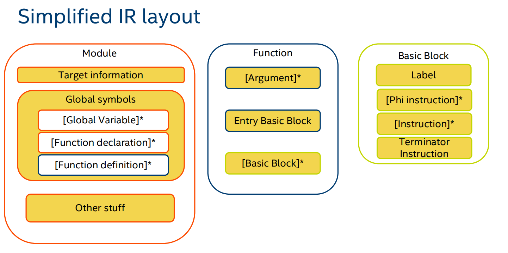

LLVM-IR
LLVM-IR，即LLVM中间代码，有三种表示方式，他们互相之间是等价的。
- 内存中的LLVM IR （为了编译器快速处理）
- ⽐特码形式的LLVM IR （为了给方便给JIT complier使用）
- 可读形式的LLVM IR （为了给人看）
回忆编译原理的内容，我们完成语法分析和语义分析，生成了抽象语法树AST时，下面我们想要生成中间代码。LLVM-IR就是一种中间代码。根据AST⽣成对应的LLVM IR，这也就是编译器前端所做的事，编译器后端则是将LLVM IR转换成具体的机器语言。所以LLVM-IR是沟通前后端的桥梁。如果我们想要写一个编译器，那么我们完成前端部分生成LLVM-IR，后端部分就不用我们自己动手了。
下面这个图很好的展现了llvm ir的构造。

- Module：可以认为Module是LLVM的编译单元。
- Global Variable：全局变量。
- Function declaration：函数声明。
- Function definition：函数定义。
- Argument：函数的参数
- Entry Basic Block：函数入口
- Basic Blocks：Basic block满足下面两个条件的指令序列，所以你可以认为BasicBlock是相对于控制流的基本单元。
- 控制流只能从BasicBlock的第一个指令进入该块。
- 除了BasicBlock的最后一个指令（Terminator Instructoin），控制流在离开基本块之前不会跳转或停机。
IR生成
我们已经了解了LLVM-IR的基本结构。那么，我们要怎么生成LLVM-IR呢？这需要了解一下LLVM提供的接口。LLVM是用C++写的，但是我不太喜欢C++，所以下面的是LLVM的Rust-binding，来自inkwell。
LLVMContext: is an opaque object that owns a lot of core LLVM data structures, such as the type and constant value tables. We don’t need to understand it in detail, we just need a single instance to pass into APIs that require it.IRBuilder: This provides a uniform API for creating instructions and inserting them into a basic block: either at the end of a BasicBlock, or at a specific iterator location in a block.
#![allow(unused)] fn main() { let context = Context::create(); let builder = context.create_builder(); }
-
Module: 包括Function和Global Variable#![allow(unused)] fn main() { let module = context.create_module("hello"); }-
Target: 表示特定的后端构建目标。 -
FunctionValue: 给module添加一个函数。先利用构造函数的类型。#![allow(unused)] fn main() { let fn_type: FunctionType = context.i32_type().fn_type(&[], false); let func: FunctionValue = module.add_function("hello", fn_type, None); } -
GlobalValue: 给module添加一个全局变量，我们可以声明变量的类型和名字，还有他的链接方式。全局变量可以是外部链接的。#![allow(unused)] fn main() { let global: GlobalValue = module.add_global(context.i32_type(), None, "i"); }
-
-
Function: 包括Arguments和Basic Block。Argument的类型在之前给module添加函数的时候就已经确定了，所以我们接下来要往Function中添加BasicBlock。-
BasicBlock: 给一个函数添加basic block。下面的三种插入方法，可以给函数依次插入block0, block1, block2。#![allow(unused)] fn main() { let basic_block = context.append_basic_block(func, "block1"); context.insert_basic_block_after(basic_block, "block2"); context.prepend_basic_block(basic_block, "block0"); }
-
-
BasicBlock: 由很多instruction组成。并且一个terminate instruction是必要的。接下来我们要给Basic Block添加instruction，这就是builder发挥作用的地方了。首先要给builder定位在Basic Block的某个位置。
#![allow(unused)] fn main() { builder.position_at_end(block); builder.position_at(basic_block, instruction); builder.position_before(instruction); builder.clear_insertion_position(); }然后可以用
builder的build_xxx方法创建各种指令，也可以认为是创建各种Value。如何确保有一个terminate instruction呢？可以用
builder.get_terminator，如果返回值是None说明没有terminate instruction。这时我们应该手动给他添加一个terminate instruction。比如，如果是函数的最后的话加上ret，是一个一般的分支指令，可以加上无条件跳转指令到下一个basicblock。 -
最后来看
Instruction，其实是看Value。-
Valuerepresents a typed value that may be used (among other things) as an operand to an instruction. 有各种各样的Value，包括Instruction也是Value。One important aspect of LLVM is that there is no distinction between an SSA variable and the operation that produces it。对于这一点，你可能感到有点奇怪，比如下面的两条指令，第一个是SSA可以理解，
%x是一个PionterValue，那第二个是啥玩意儿？其实第二个是InstructionValue。总之都是Value。%x = alloca i32, align 4 store i32 1, i32* %x, align 4inkwell用
AnyValueEnum和AnyValue来概括所有的Type。当然每种Value都有他自己的特殊的属性，这里就不详细介绍了。#![allow(unused)] fn main() { pub enum AnyValueEnum<'ctx> { ArrayValue(ArrayValue<'ctx>), IntValue(IntValue<'ctx>), FloatValue(FloatValue<'ctx>), PhiValue(PhiValue<'ctx>), FunctionValue(FunctionValue<'ctx>), PointerValue(PointerValue<'ctx>), StructValue(StructValue<'ctx>), VectorValue(VectorValue<'ctx>), InstructionValue(InstructionValue<'ctx>), } pub trait AnyValue<'ctx>: AsValueRef + Debug { fn as_any_value_enum(&self) -> AnyValueEnum<'ctx> { ... } fn print_to_string(&self) -> LLVMString { ... } } } -
每个
Value都有一个Type。可以认为Value是Type的实体。Type可以从context的方法构造，Type之间可以组合成新的Type。你也可以使用每种Value都有的get_type方法获取他的Type。#![allow(unused)] fn main() { let t1:IntType = context.i64_type(); let t2:ArrayType = context.i64_type().array_type(2); }inkwell用
AnyTypeEnum和AnyType来概括所有的Type。#![allow(unused)] fn main() { pub enum AnyTypeEnum<'ctx> { ArrayType(ArrayType<'ctx>), FloatType(FloatType<'ctx>), FunctionType(FunctionType<'ctx>), IntType(IntType<'ctx>), PointerType(PointerType<'ctx>), StructType(StructType<'ctx>), VectorType(VectorType<'ctx>), VoidType(VoidType<'ctx>), } pub trait AnyType<'ctx>: AsTypeRef + Debug { fn as_any_type_enum(&self) -> AnyTypeEnum<'ctx> { ... } fn print_to_string(&self) -> LLVMString { ... } } }
-
一些具体的翻译方式
这里推荐的学习方式，是用clang -S -emit-llvm hello.c的方式，生成中间代码hello.ll，然后阅读C源代码是怎么被翻译成LLVM-IR的。
变量定义和使用
变量可以存储在哪里呢？回顾一下C语言的内存模型，无非就是：
- 寄存器中，这肯定是局部变量。
- 栈上，也是局部变量，如果我们需要地址的话就不能存在寄存器，只能存在栈中。
- 静态数据区，全局变量。
- 堆上。这个是通过内存分配函数分配的，当做前三种的指针指向的内存就好。
所以，当我们声明一个全局变量的时候（不考虑外部链接），其实是在静态数据区分配了一段内存，然后我们需要用对应的指针操作这一块内存；如果我们需要分配（可变的）局部变量，那么我们可以在栈上开辟一块内存，然后用对应的指针操作这一块内存；如果我们需要分配一个不变的局部变量（或者是计算的中间值），我们可以用寄存器来做存储，LLVM的寄存器是无限的。比如下面这个例子
int a = 1; // 全局变量
int main() {
int b = (a + 1) / 3 ; // 局部变量
return 0;
}
我们看对应的汇编代码，做了一点改动便于阅读。注意两个特点，一个是寄存器(%开头的变量)只能被赋值一次，叫做SSA；一个是使用load/store操作内存，这个和其他的RISC汇编类似。
@a = dso_local global i32 1, align 4 ; 全局变量
define dso_local i32 @main() #0 {
%b = alloca i32, align 4 ; 分配了一个局部变量
%3 = load i32, i32* @a, align 4 ; 使用全局变量，要用load加载
%4 = add nsw i32 %3, 1 ; 中间的计算结果用寄存器存储
%5 = sdiv i32 %4, 3
store i32 %5, i32* %b, align 4 ; 给局部变量赋值
ret i32 0
}
如何表达数组/结构体这个概念
把他们放在一起是因为在LLVM中他们的表达方式是类似的。我们需要用到getelementptr(简称GEP)指令，顾名思义他是用来计算元素的地址的。官方有一个答疑文章。以数组为例，下面这段代码，有三个点，定义数组，给数组赋值，取数组的值。
int main() {
int a[10];
a[2] = 3;
return a[2];
}
看看被翻译成什么指令。分配没什么特别的。关键就是GEP指令取了地址，然后就是对地址做操作罢了。
define dso_local i32 @main() #0 {
%a = alloca [10 x i32], align 16 ; 分配一块内存空间
%3 = getelementptr inbounds [10 x i32], [10 x i32]* %a, i64 0, i64 2
store i32 3, i32* %3, align 8 ; 修改值
%4 = getelementptr inbounds [10 x i32], [10 x i32]* %a, i64 0, i64 2
%5 = load i32, i32* %4, align 8 ; 取值
ret i32 %5
}
GEP的基本格式是getelementptr inbounds <ty>, <ty>* <ptrval>{, [inrange] <ty> <idx>}*，先是类型声明，然后是一个该类型的指针。这是我们取地址的起点。之后就是若干个索引。看到这里，你会很迷惑，上面的索引为什么是0,2，单走一个2不就好了吗？其实要这么理解，ptr的类型是[10 x i32]*，用C语言描述就是int* ptr []，也就是int **ptr，所以&ptr[0][2]表达的才是数组的第二个元素。如果你还是无法理解，可以再看下面的例子，这也是取地址的操作。
int main() {
int a[10];
int *p; // %p = alloca i32*, align 8
p = a // %4 = getelementptr inbounds [10 x i32], [10 x i32]* %2, i64 0, i64 0
// store i32* %4, i32** %p, align 8
// %5 = load i32*, i32** %3, align 8
return p[1]; // %6 = getelementptr inbounds i32, i32* %5, i64 1
// %7 = load i32, i32* %6, align 4
}
如何表达各种控制流
再回顾一下Basic Block，一个基本块由下面几个内容组成：
- Label（标签可以省略，会自动加上）
- Instructions
- Terminator Instruction（终结指令，比如branch
br和function returnret，详细看文档）
控制指令，其实就是各种在Basic Block中间跳转的指令。LLVM提供了哪些控制指令呢？
-
icmp：LLVM IR提供的⽐较指令为icmp。其接受三个参数：⽐较⽅案以及两个⽐较参数。比如%comparison_result = icmp uge i32 %a, %b的语义就是
bool comparison_result = ((unsigned int)a >= (unsigned int)b); -
br：条件跳转如果comparision_result = true跳转到A，=false跳转到B。和无条件跳转br i1 %comparison_result, label %A, label %B A: ; do something A ; terminator B: ; do something B ; ============== start: br label %start -
select：指令接受三个参数。第⼀个参数是⽤来判断的布尔值，也就是 i1 类型的 icmp 判断的结果，如 果其为 true ，则返回第⼆个参数，否则返回第三个参数。%y = select i1 %result, i32 1, i32 2的语义为
i32 y = result ? 1 : 2; -
phi：指令可以根据控制流决定值的选择，是增强版的select。比如下面的语句，如果前⼀个basic block是%btrue，那么返回 1 ，如果前⼀个basic block是%bfalse，那么返回 2 。btrue: br label %end bfalse: br label %end end: %y = phi i32 [1, %btrue], [2, %bfalse]
函数声明和定义
函数：最基本的函数定义如下。
define i32 @main() {
ret i32 0
}
函数声明，将define换成declare。declare i32 @printf(i8*, ...) #1。
函数调用，%1 = call i32 @foo(i32 1)
参考链接：
LLVM-IR-tutorial: 看一遍，大概了解LLVM汇编的写法和基本思想。
inkwell的文档: rust binding, 我更熟悉一点。
LLVM-Program-Manual: 我比较喜欢这里的对类的总体性介绍。